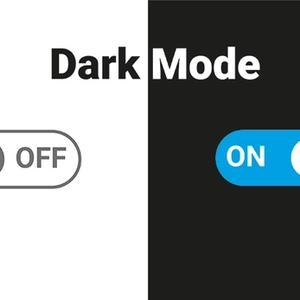

Dark Mode in Next.js 13 with App Directory with TailwindCSS

There is a wealth of documentation on the Internet to help developers. How nice that people share their knowledge with others!
However, it is sometimes possible to encounter incomplete, outdated or even contradictory information.
I realized that the two best documents I found for adding a dark and light theme to a project I created with Next.js and TailwindCSS both contained incomplete information. I realized that these documents needed to be carefully combined to achieve a successful result. Needless to say, I lost hours until I realized that!🙂
In the following, I share with you the tried and tested information that I have prepared using these two sources. Please note: The explanations only apply to Next.js applications with an "app" directory installation.
For this purpose we will use "next-themes". For applications using Next.js, the next-themes offers features that enhance the user experience when it comes to themes. For more information, you can refer to their documentation.
Start by installing next-themes in your project:
$ npm install next-themes
The next step is to update the app/layout.jsx in order to be able to use next-themes. Start by creating a new component with the name "providers" in the "app" folder (if you do not already have it):
// app/providers.jsx
'use client'
import { ThemeProvider } from 'next-themes'
export function Providers({ children }) {
return (
<ThemeProvider attribute="class" defaultTheme="dark"> {children} </ThemeProvider>
)}
Note: We use the class attribute to switch between the themes.
Then import the "Providers" component into your layout and wrap the "children" with it. Note that the first letter is a capital letter 🙂.
// app/layout.jsx
import { Providers } from './providers'
export default function Layout({ children }) { return ( <html suppressHydrationWarning> <head /> <body> <Providers>{children}</Providers> </body> </html> )}Note: You must add the "suppressHydrationWarning" attribute to avoid warnings when next-themes updates this element. "This property only applies one level deep, so it will not block hydration warnings on other elements.
Your user interface receives the information about the current theme via the "useTheme" hook and can change it. So we can create a switcher component to switch the dark and light themes:// app/components/ThemeSwitcher.jsx
"use client";
import {useTheme} from "next-themes"; import { useEffect, useState } from "react";
export function ThemeSwitcher() { const [mounted, setMounted] = useState(false) const { theme, setTheme } = useTheme()
useEffect(() => { setMounted(true) }, [])
if(!mounted) return null
return ( <div> The current theme is: {theme} <button onClick={() => setTheme('light')}>Light Mode</button> <button onClick={() => setTheme('dark')}>Dark Mode</button> </div> )};Or you can return something like this button and attach conditions to it:return ( <button onClick={() => { theme === "dark" ? setTheme("light") : setTheme("dark"); // OR setTheme(theme === "light" ? "dark" : "light"); }} > </button> );An important detail was missing in both articles:
Apart from the above, we need to add the following line in the "tailwind.config.js" file:module.exports = { darkMode: "class", ...};With this we can bypass the system default, otherwise we will not be able to change the theme witht the switcher component.
Hopefully this information will help!🙂
Sources:- https://nextui.org/docs/customization/dark-mode- https://github.com/pacocoursey/next-themes- Dark & light mode image: https://www.southampton.ac.uk/blog/wp-content/uploads/sites/27/2022/03/Dark-Mode-Hero.jpg- TailwindCss image: https://tinyurl.com/5c6ykay6- Next.js image: https://tinyurl.com/3hyhkvxh